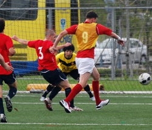
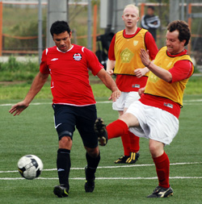
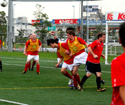
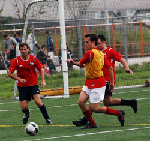

|
Fukuda Denshi, Sunday 26th September
As we started the walk from Soga station to Fukuda Denshi there was the familiar ‘Match Day’ tension and crackle in the air. Vendors lined the way to the stadium and people walking the streets* could purchase Donner kebabs, yakitori and beer at the stalls. New recruit Nick Pike was obviously impressed at how big the build up for a Vagabonds game is and how big the stadium was too…….until he realized that we weren’t playing JEF united and the pitch is actually behind the stadium proper.
Vagabonds clinical organizational machine was in evidence as we not only had remembered that the Embassy play in red and remembered that Muzzy lost our bibs, but actually remembered to buy some in the frantic 3 month period since we last played them. Thanks Steve.
A record bevy of supporters also turned up to cheer the Vags on, with 3 women and 3 kids on the sidelines to watch the game. Well, not exactly watch. None of the 6 fans had any idea what the score was by the time the match had finished. One female does remember Selwyn being clean through before being tripped inside the penalty area and going arse over tit. Certain penalty? Not exactly…he tripped himself up.
Anyway they had a good chat.
The Embassy had come out of the starting blocks with a 5-1 thumping of the team in the division with the silly name so were not to be taken lightly despite our finishing last season beating them (Embassy – not the team with the silly name) 6-2 in the only game I can remember in recent years against them (Embassy – not the team with the silly name) that wasn’t really close.
There would be no 6-2 today but a relatively comfortable 2-0 that pleased the manager no end as it was free of the usual Vags panic that sets in after going ahead. Early on it was a case of both teams feeling their way into the game** and there was a lot of the game played in the middle of the park. Jorge (British ambassador to Mexico or something) had a speculative effort from long range and Vags had a few quarter chances without ever really threatening. Vags then went ahead after a sustained bit of pressure when a ball into the box caused confusion and with Tom, Muzzy and Ryo all in the mix an own goal ensued and the lead was taken. Scrappy but that’s fine.
Half time chat was mostly ‘more of the same’ with a few wise nuggets thrown in by Steve.
The second half saw the Vags pushing on more and Selwyn’s introduction caused real problems for their back line as he is such a swift one***.
He proved a handful, not least for the opposition linesman who must have developed linesman’s elbow for the number of times Selwyn was caught off-side. This is not a complaint however, because the boy racer was generally off. He did beat the trap as the game entered the final 10 and this time managed to stay on his feet and slip it past the Embassy goalkeeper who was rather bizarrely rooted to his goal line. Well taken goal.
Other clear-cut chances are difficult to remember mostly due to the fact that I was watching the Panthers beat Sala on the other pitch…but there were a succession of good corners swung in and Lynsdey, Ryo and Matt all had efforts on goal, in the loosest sense of the word.. At the other end Jorge had a dangerous free kick which came off the bar and wasn’t touched by Graham at all because we got a goal kick off it. Right Graham? Right?
Ryo was my man of the match – very composed, won all the headers and great distribution all game – he’s hardly been away.
Nick had a very good debut as well as getting booked for being kicked. Ged and Steve were commanding in the centre and this was the rock upon which the foundation was laid for the framing to go up and the cladding to be….oh Christ**** never mind.
Solid performances all round, in fact, and given that we were without at least 4 very good regulars, the squad is looking strong. All that can go pear-shaped***** very quickly of course.
Notes for match report censors
* This literally means people who are walking on the street and not ‘street walkers’
** ‘Feeling’ here is used in the non physical sense and should in no way be misconstrued as players touching each other up
*** ‘Swift one’ is used in the sense that he runs fast and should in no way be misconstrued as being used as vulgar slang for a sexual encounter between two human beings, as per last week’s report.
**** Whilst ‘oh Christ’ could be considered highly blasphemous in some circles – modern linguistics tends to regard religious taboo words as less strong and offensive than taboo words connected with sexual intercourse or male and female genitalia (taboo words connected to the latter being considered the strongest and tending not to be used by Americans strangely enough – but I digress….) (Taboo words in the English language – O’Connell 1982) – so I feel it would be unfair to cut this bit.
***** This is not a jibe aimed at Sid’s aunty Mable.
Report by Richard Straughan
|